Part 4: Synthesizing and creating the Bitstream
Creating the top-level wrapper and adding user constraints
Head back to PlanAhead, which will now be available again. Note that in the Sources pane you will find a new file, your-module.xmp. This is the system definition
we just edited and you might double-click that at any time to head back to XPS.
Right-click the XMP file and select Create Top HDL to let PlanAhead generate another wrapper file for you. This will be the main HDL file that instantiates all the PCores added to the design. Think of it as the construction root in a regular software project.
After a while, the file should be created and be listed above your XMP module. In case anything goes wrong, simply delete that item and re-create the wrapper again. Deleting it will not delete the XMP file even if it looks that way. Double-click it to open the wrapper HDL file. You will see that the external port names are listed in this file as well. If they are not, try re-importing the IP in XPS and create a new wrapper.
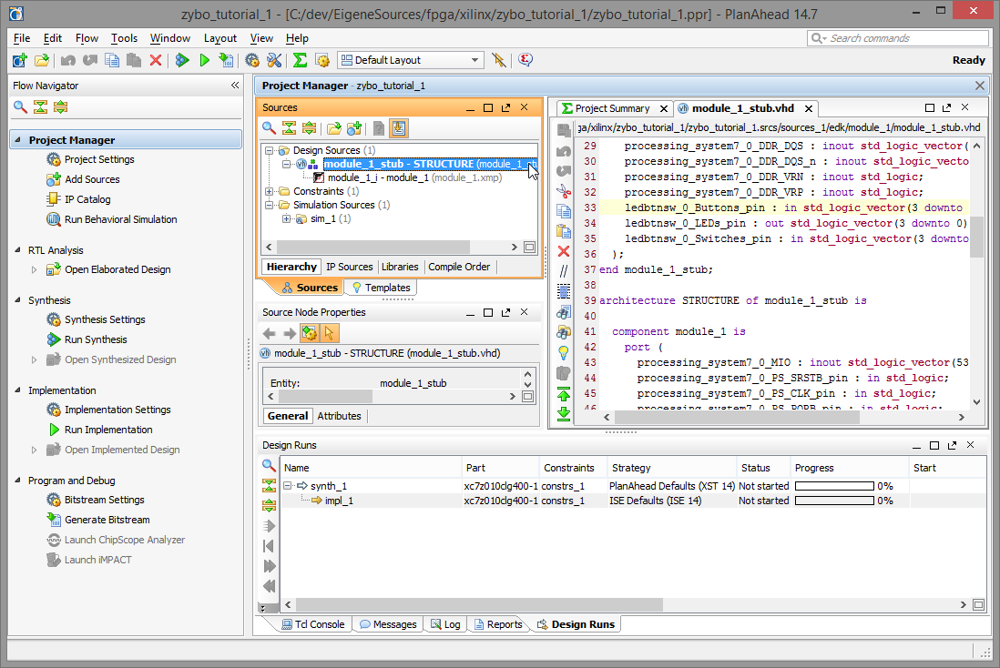Now we will add user constraints to the design that maps signals to actual pins. This step is not required until after the actual synthesis, but we can as well do this right now.
To do so, click Add Sources again in the Project Manager section of the Flow Navigator
This time, select Add or Create Constraints and click Next.
Download the ZYBO_Master.ucf for ISE designs from Digilent. Click Add Files... and browse to it.
The file will now be listed in the dialog. Check Copy constraints files into project to keep the original UCF file and select Finish to return to PlanAhead.
In the Sources pane you will find a new entry, constrs_1 in the Constraints tree. Double-click the UCF file to open it.
As you can see from the file name, this file has been copied to your-project.srcs/constrs_1/imports/xilinx of your project directory.
Within the editor, uncomment all the sw<..>, btn<..> and led<..> lines. The number of constrained pins should match the number of your signals,
so this effectively is where your C_NUM_LEDS generic comes into play.
Rename the net entries according to the signal names you gave in XPS. In case you didn't write them down, simply open the top-level HDL file again to find them.
In this tutorial, they are called ledbtnsw_0_Switches_pin, ledbtnsw_0_Buttons_pin and ledbtnsw_0_LEDs_pin.
Synthesizing the design
Now it is time to synthesize the design. In the Synthesis section of the Flow Navigator, select Run Synthesis.
A wait window will appear to show that synthesis has started, but don't get too excited when you see it disappear.
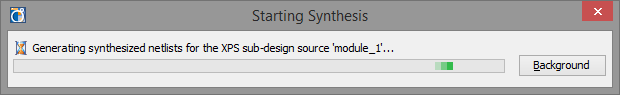In the upper right of PlanAhead you will now find a smaller progress bar reading Running XST. This is the actual synthesis process.
After a while, the Synthesis Completed dialog pops up. Select Run Implementation to start the implementation stage, which leads to the place & route process.
If you had not entered the user constraints before, now would be the time to do so before continuing, or otherwise the implementation will fail.
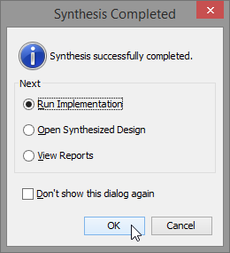Implementing the design
Again, a progress dialog appears.
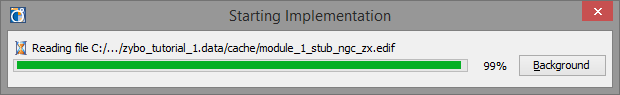As you can see, the user constraints are processed here.
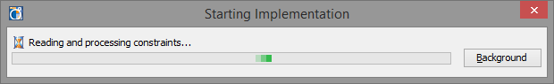You may be confronted with three "Critical Messages" about the PS7 instance that turn out to be entirely uncritical to us. These
non-warnings appear on both the ZYBO and the ZedBoard and I can not explain their cause, but since ignoring them doesn't
seem to do any harm - just click OK.
Again, the dialog disappears just to leave us with the smaller progress bar in the upper right. You'll find Running NGDBuild ...
... Running MAP ...
... Running PAR — which is the place and route process — ...
... Running TRCE ...
... and Running XDL.
After that, the implementation is complete and we can now generate the bitstream, which is the required end result to configure the programmable logic, much like an executable file for the processing system.
To do so, select Generate Bitstream.
Creating the Bitstream
If we had not clicked Generate Bitstream in the last dialog window but instead canceled it, we would chose the Generate Bitstream action under the Program and Debug section in the Flow Navigator now.
Since we did chose it, however, we find the message Running Bitgen in the top right status bar.
After a short while the "Bitstream Generation Completed" dialog appears where we chose to open the implemented design.
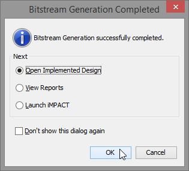While we do not need the information at the moment, this will be a required step when exporting the hardware to the
SDK. We can do that now using the File, Export, Export Hardware for SDK menu.
In the upcoming dialog, among Export Hardware and Launch SDK, select Include bitstream. If this option is greyed out, press Cancel and select
Open Implemented Design in the Implementation section of the Flow Navigator pane, then export again.
This is also a quick way to re-launch SDK should you need to do so.
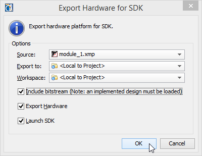After that, you might skip to the next part or read on if you are interested.
Optional: Programming the FPGA using iMPACT
Alternatively to using the SDK — or in addition to it — the FPGA can be configured (i.e. "programmed") right now using Xilinx iMPACT. We can do so by clicking Launch iMPACT in the Program and Debug section.
Note that generally the Zynq AP SoCs are bootstrapped by the ARM core, much like a regular microcontroller system where the FPGA acts as a slave during startup. That means that generally using the FPGA logic will only work after the FPGA has been initialized by the ARM core, i.e. when the ARM core is already flashed with a program that initializes the FPGA. When using iMPACT to configure the FPGA on the fly, this restriction does not apply.
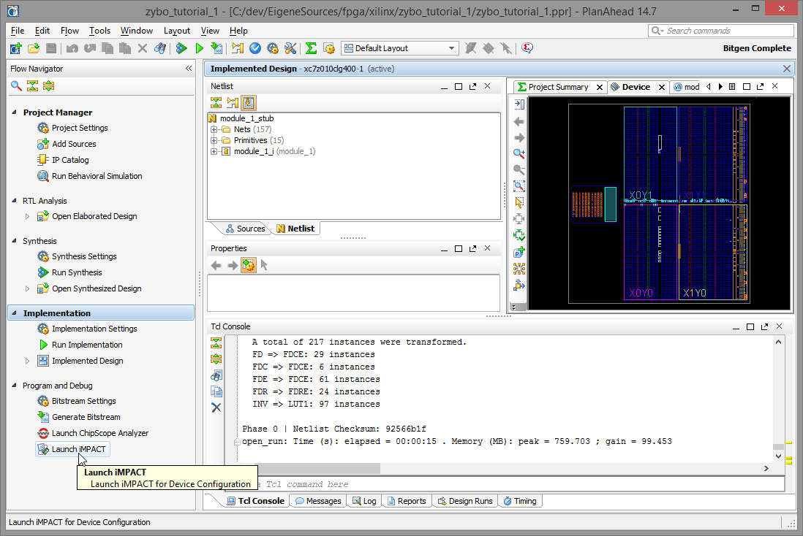
If you happen to have the Digilent Adept suite and the Digilent Plugins for Xilinx Tools installed
If you find an empty window or want to make sure everything is correct, check your cable setup by selecting Output, Cable Setup....
In the following dialog select the Digilent USB JTAG Cable option (available after installing Adept and the Digilent Plugins) and select your board in the Port dropdown. Close the dialog, accepting the changes.
Should the cable option appear and the Port dropdown remain empty, make sure you really installed the latest version of Adept.
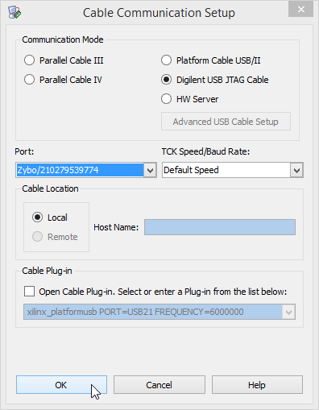In the Boundary Scan flow, both the ARM core and the FPGA should be detected now. Right-click the FPGA
and select Set Target Device to feel good.
Next, by right-clicking the FPGA again, select Program.
In the Device Programming Properties dialog that pops up, just click OK.
After a short while, the FPGA should be programmed and already responding to your inputs. Try fiddling with the switches and buttons to see if it works. If it does not, make sure the ARM core is initialized first and/or move on to the SDK.
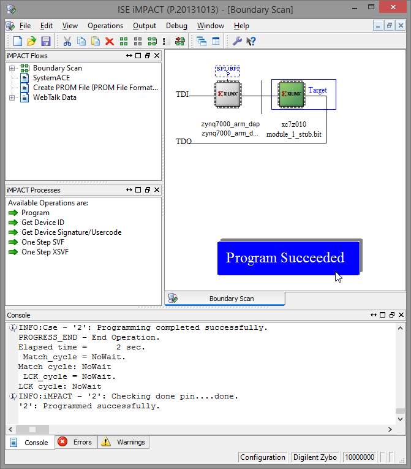After that, close iMPACT and export the hardware for the SDK for profit and cake.
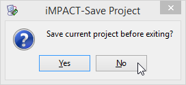You may ignore the save dialog, as your changes here will be remembered anyway.